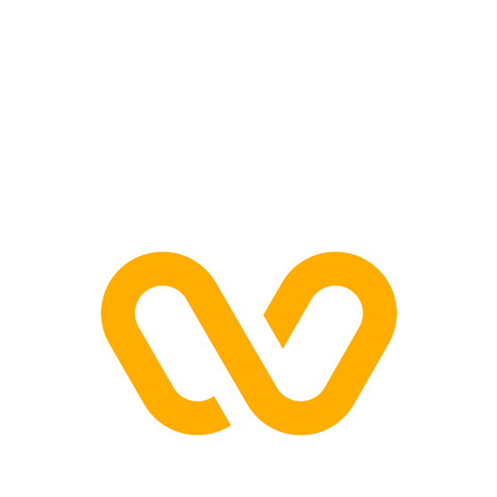
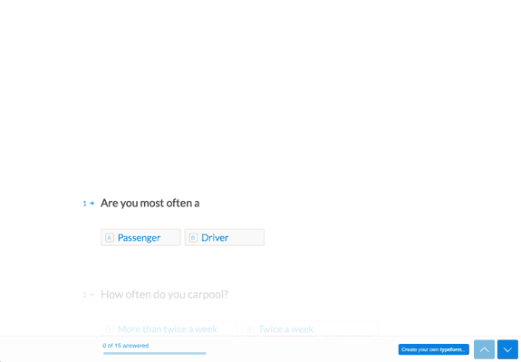
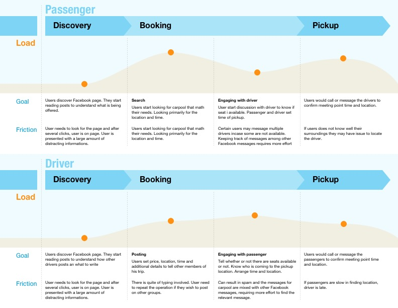
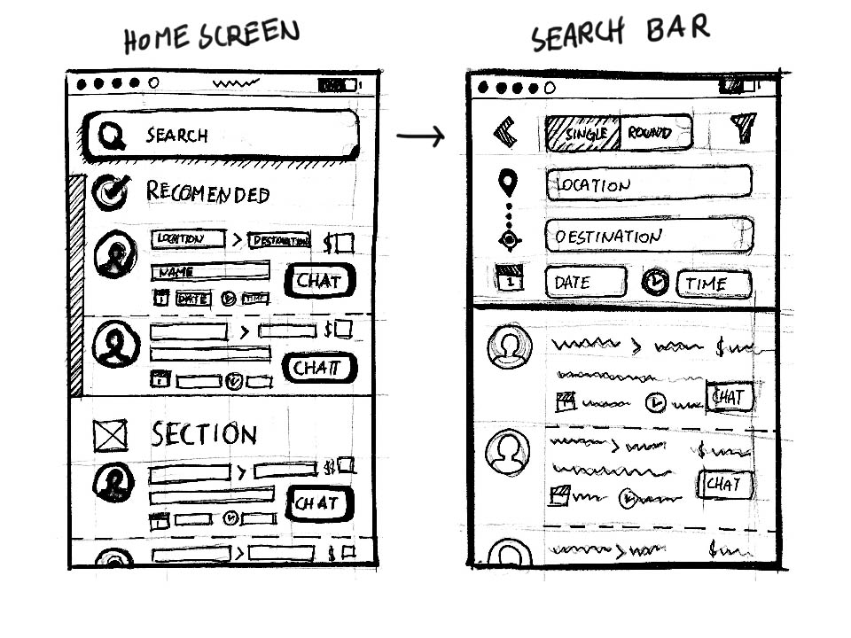
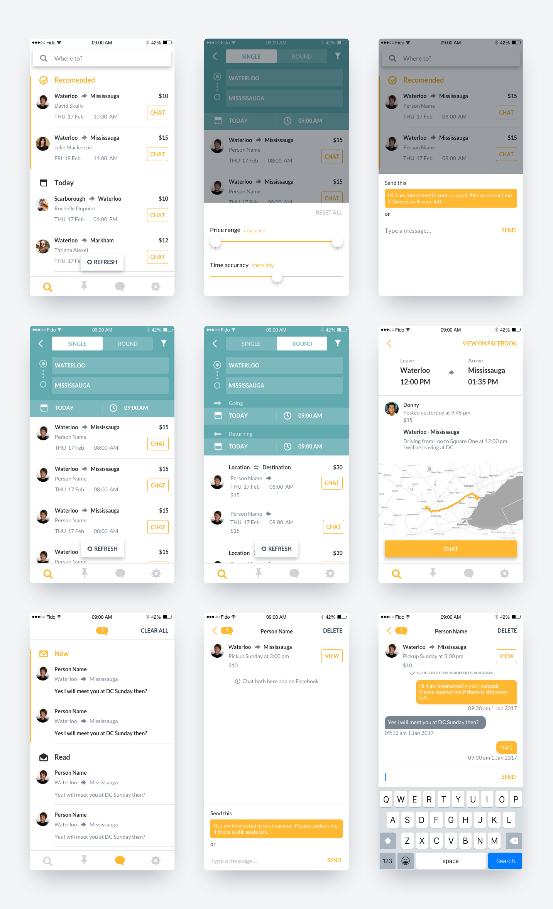
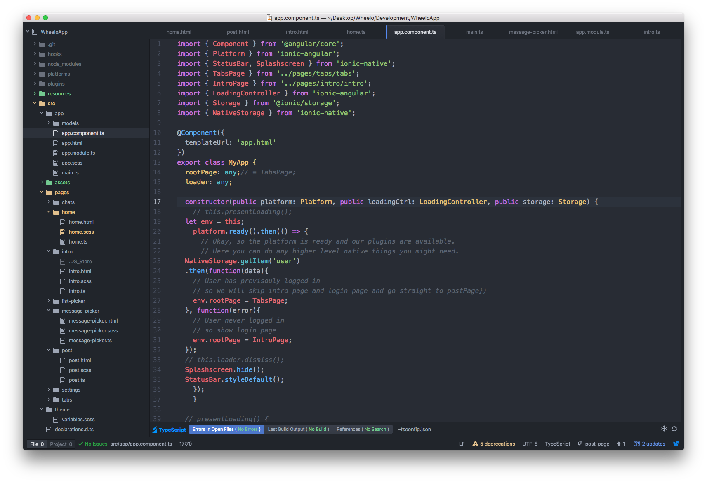

Wheelo
DESIGN BRIEF
Wheelo is an app that let University of Waterloo and
Laurier students plan and travel at a low price in between Cities.
During the winter of 2017, I lead the UX, visual design,
user research and product roadmap of Wheelo. The main objectives for the
MVP of Wheelo were to make the process of finding a carpool in only a
few taps and to build our user base as quickly as possible. Therefore
a multiplatform app was needed, both for iOS and Android.
User Research
The first step was to determine what was the struggles
and how did people found carpools. It was also crucial to determine the
level of difficulty at the touch points of the current process.
I create an online form that would take only a few minutes to fill and
posted it on social networks to understand real users. The gif below
shows the questionnaire used.
Base on the generous data I received, the user's
journey map with critical touchpoints was created. The diagram below
shows the touchpoints that create the most friction as orange peaks.
This helped me to prioritise the problems and determine the
objectives and constraints that the app needed to achieve.

Typefrom questionnaire used to collect user data

Users' journey with current system
The personas of our users where synthesise to help us
remind ourselves of the problems that our users were facing and always
design a feature with them in mind. Wheelo has 2 types of users,
driver and passengers. The personas below shows one fictitious user
from each group.
Emily: Passenger
Bio
Profession: Undergraduate student
Location: Toronto
Type: passenger
Background
Emily is an undergrad student from University of waterloo. She
rents an apartment with other classmates in the surroundings of
the university. She has courses through Monday to Thursday and
prefers to return home in Toronto on Thursday and come back to
waterloo on Sunday evenings. She usually either share a ride with
her friend or looks for a carpool.
Motivations
She chooses to carpool for the time saved in doing so. She always
looks for the option which is cheaper and requires less effort.
Frustrations
She finds it hard to go through a dozen or poorly written post to
find the one that she is interested in. The time spent looking
for a matching carpool is a downer for her and prefers to ask a
friend first.
Kevin: Driver
Bio
Profession: Undergraduate student
Location: Toronto
Type: driver
Background
Kevin a graduate student of waterloo. He is doing research for
the university. He lives alone and has a car that he uses
regularly to got to school and drive home during the weekends.
Motivations
He thinks about saving a bit of cash when he drives home by
driving other carpoolers. He wants to get people quickly and
regularly. To be able to do so he was to be able to post his
ad quickly and easily.
Frustrations
He always posts on multiple pages weekly. He thinks that
needing to repost or rewrite is a waste of time.
DESIGN
Sticking to the click mentality, the focus was to design
the search bar that let them find their carpool with the less amount
of input. The diagram below demonstrates the logic map to achieve
the minimum amount of steps to find a carpool.
After determining the logic of the app, I designed how
the user would interact with the app. To achieve this I start by doing
rough sketches of the states of the different screens required.
Below is the chosen paper prototype for the app.

Paper prototype for the Home screen and search bar
VISUAL LANGUAGE
The next step involves fleshing out those concepts into a
tangible and coherent tool. To achieve this, I designed the iconography
and typography following a strict code. For example, the icons in the
app were made using the icon grid principle that enables irregular
shapes to fit pleasantly and have the same weight on screen.
Furthermore to inject a bit of personality to the icons so that users
can always recognise Wheelo, was to give them a rounded edge on
one side only.

Icons designed using grid to normalise visual weight
In designing the onboarding, this style can also bee
seen in the illustrations. The illustrations' colours were restricted
to the current palette of the app and where made using simple
juxtapose geometry to make them highly rememberable.

Illustration made by juxtaposing simple shapes
PROTOTYPING
A high fidelity prototype was made using sketch and illustrator.
To communicate the designs properly with the rest of the team, I used
"Marvel" to show the user flow and "Zeplin" for dimensioning.

Screens mades using "Sketch"
DEVELOPMENT
Due to tight deadlines and the need for use to reach the
largest amount of users, we used Ionic framework for developing a
cross-platform product. I got the opportunity to work with this tool
and sharpen my skill with angular and web mobile frameworks.

Ionic framework used to develop Wheelo
SELF CRITIQUE
A lot of time spent to in exploring different alternatives for the search bar with is a critical feature. This can linger and delay development. I also was able to empathise with the pain of the developers when translating mocks to code when we need to support every screen size..